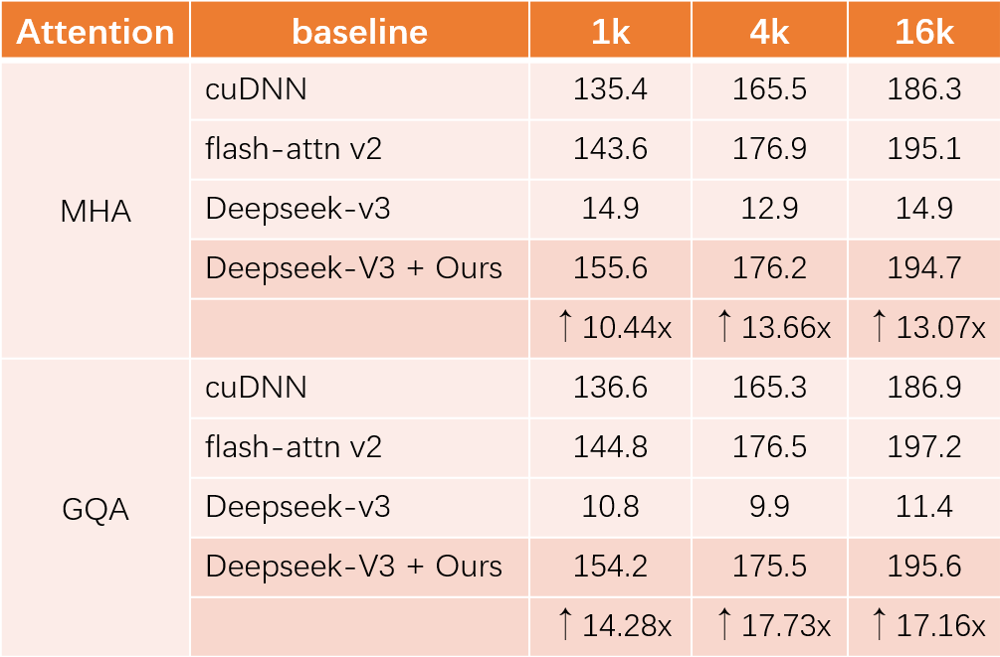

We define Thinking Languge to help LLMs describe attention execution workflows and parameters on GPUs.
The attention operator remains a critical performance bottleneck in large language models (LLMs), particularly for long-context scenarios. While FlashAttention is the most widely used and effective GPU-aware acceleration algorithm, it must require time-consuming and hardware-specific manual implementation, limiting adaptability across GPU architectures. Existing LLMs have shown a lot of promise in code generation tasks, but struggle to generate high-performance attention code. The key challenge is it cannot comprehend the complex data flow and computation process of the attention operator and utilize low-level primitive to exploit GPU performance.
To address the above challenge, we propose an LLM-friendly Thinking Language (LLM- TL) to help LLMs decouple the generation of high-level optimization logic and low-level implementation on GPU, and enhance LLMs' understanding of attention operator. Along with a 2-stage reasoning workflow, TL-Code generation and translation, the LLMs can automatically generate FlashAttention implementation on diverse GPUs, establishing a self-optimizing paradigm for generating high-performance attention operators in attention-centric algorithms. Verified on A100, RTX8000, and T4 GPUs, the performance of our methods significantly outshines that of vanilla LLMs, achieving a speed-up of up to 35.16×. Besides, our method not only surpasses human-optimized libraries (cuDNN and official library) in most scenarios but also extends support to unsupported hardware and data types, reducing development time from months to minutes compared with human experts.
We define Thinking Languge to help LLMs describe attention execution workflows and parameters on GPUs.
We conduct our QiMeng-Attention on Deepseek-V3 to evaluate the effectiveness. We evaluate some attention variety such as MHA(multi-head attention) and GQA(group-query attention). We test the performace on different length of input sequence.
Here shows the results on A100 and head dimension of 128. Implemented on Deepseek-V3, QiMeng-Attention achieves a performance enhancement of up to 17.73x compared to vanilla LLMs. Besides QiMeng-Attention can achieve better performances compared to handcraft high performance library such as flash-attn and cuDNN.
